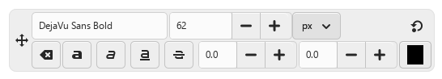
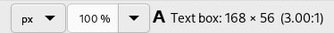

Table of Contents
Text is managed with the Text tool. This tool creates a new layer containing the text, above the current layer in the Layers dialog, with the size of the text box. Its name is the beginning of the text.
Figure 9.1. Example of a text item

Example of a text item, showing the boundary of the text layer. (Font: Utopia Bold)

The Layers dialog, with the text layer above the layer which was current.
Text can be edited directly on canvas. A text tool box, which shows up on top of the canvas above the text box, allows you to quickly change some of the text characteristics.
![[Note]](images/note.png)
|
Note |
|---|---|
|
The settings you change in this on canvas dialog only apply to the parts of the text that are selected, or any new text you type after the current cursor position. |

When you click on the canvas with the Text tool, an empty text box appears with a semi-transparent dialog above it. The empty text box is where your text will appear when you start typing.
Text tool options are described in Section 5.3, “Text”.
To enter text start typing. The text box will enlarge gradually. Press Enter to add a new line.
You can also enlarge the text box by click-and-dragging, as you do with selections. While dragging, the size of the text area will be shown in the status bar at the bottom of the image window.

To edit text properties first select the part you want to change by click-and-dragging, or by using Shift+arrow keys. Then use the options of the Section 1.3, “Text Toolbox” to change the selected text.
Instead of using the on-canvas text editing, you can use the text editor dialog described in Section 5.3.3, “Text Editor”.
To move the text on the image use the Move Tool. Note that by default you must click on a visible part of the text to move the text layer.
You can edit the text later, if the text layer still exists and has not been modified by another tool (see below): make the text layer active in theLayer dialog, select the Text tool and click on the text in the image window.
It can be useful to enter characters that are not easily available on your keyboard. How you enter these Unicode characters depends on your Operating System.
- Linux
-
You can enter Unicode characters with the keyboard shortcut Ctrl+Shift+U followed by the hexadecimal number of the desired character and then pressing Enter.
- macOS
-
Use the Character Viewer, shortcut Ctrl+Cmd+Space to find and insert symbols, or enable the Unicode Hex Input keyboard in Keyboard settings. With the Unicode Hex Input active, hold the Option key and type the character's hexadecimal code to insert it.
- Windows
-
If you know the number of the character, you can enter that character by pressing and holding the left Alt followed by the number using the numbers on the keypad, and then releasing the Alt key. This only works for a limited set of characters.
Alternatively you can select a character or emoji by opening a dialog using the shortcut Windows-key+.. By default emojis are shown, but you can change that to symbols using the tabs at the top, and then further select a category with the tabs at the bottom.
The third option is by opening the Character Map™ application that is part of Windows and select the desired character from there.
Of course this feature is more useful for entering special (even exotic) characters, provided that the required glyphs for these characters are supplied by the selected font — only few fonts support Klingon. ;-)

Unicode 0x47 (“G”), 0x2665, 0x0271, 0x03C0
You can operate on a text layer in the same ways as any other layer, but doing so often means giving up the ability to edit the text without losing the results of your work.
To understand some of the idiosyncrasies of text handling, it may help for you to realize that a text layer contains more information than the pixel data that you see: it also contains a representation of the text in a text-editor format. You can see this in the text-editor window that pops up while you are using the Text tool. Every time you alter the text, the image layer is redrawn to reflect your changes.
Now suppose you create a text layer, and then operate on it in some way that does not involve the Text tool: rotate it, for example. Suppose you then come back and try to edit it using the Text tool. As soon as you edit the text, the Text tool will redraw the layer, wiping out the results of the operations you performed in the meantime.
Because this danger is not obvious, the Text tool tries to protect you from it. If you operate on a text layer, and then later try to edit the text, a message pops up, warning you that your alterations will be undone, and giving you three options:
-
edit the text anyway;
-
cancel;
-
create a new text layer with the same text as the existing layer, leaving the existing layer unchanged.
An on-canvas text toolbar appears when you click on the canvas with the Text Tool, right above the location where you type your text. It allows you to change most common text settings directly on canvas. The toolbar can be moved to a different position if it is in the way.
Besides the usual text formatting features like font family, size, style and text color, you get control over baseline offset and kerning.
|
|
Note |
|---|---|
|
Beware that all the settings on this toolbar only work on the currently selected text. That way you can use different styles for different parts of your text. |
-
The
 icon on the left side shows the area on the toolbar that you can
grab to drag the toolbar to a different location.
icon on the left side shows the area on the toolbar that you can
grab to drag the toolbar to a different location.
-
When the toolbar has been moved from its original location, it can be restored to that location by using the
 icon on the top right side of the toolbar. This icon is only visible
if the toolbar has been moved.
icon on the top right side of the toolbar. This icon is only visible
if the toolbar has been moved.
-
Change font of selected text: as soon as you start editing the default font name, a drop-down list appears, allowing you to select a font.
-
Change size of selected text: changes the font size of the selected text. The unit drop-down next to it can be used to change the type of unit used for the text size.
-
 Clear style of selected text:
use this to remove all text styling that was applied to the
selected text.
Clear style of selected text:
use this to remove all text styling that was applied to the
selected text.
-
Bold, Italic, Underline, Strikethrough: toggles the markup for the selected text.
While editing, shortcut keys can be used for Bold (Ctrl+B), Italic (Ctrl+I) and Underline Ctrl+U.
-
Change baseline of selected text: “In European typography and penmanship, baseline is the line upon which most letters "sit" and below which descenders extend” (Wikipedia). In HTML, there are several kinds of baselines (alphabetic, ideographic, bottom…). Here, consider that baseline is "bottom" and determines the place for descenders. The default baseline "0" gives place for descenders. You can use it to increase space between two lines only, while “Adjust line spacing” in tool options increases space between all lines.
-
Change kerning of selected text: “In typography, kerning… is the process of adjusting the spacing between characters in a proportional font.” (Wikipedia). You can use this setting to adjust letter spacing of a selected part of text.
Let us look at a selected text (zoomx800 to see pixels):
We can see that the Sans font is a proportional font: letters widths are different, and “T” glyph comes over the “e”. Letters widths are marked with thin vertical lines and left borders of letter width cover preceding letters by one pixel. Now we set “Change kerning of selected text” to 2 pixels:
Blank spaces, 2 pixels wide, are added between all selected characters and letter widths are preserved. If no text is selected, a blank space is added at the location of the cursor between two characters.
Here is a comparison with the Adjust letter spacing option of the Text tool:
The option applies to the whole text, not only to the selected text. Blank spaces are added inside letters widths and letter widths are not respected.
-
You can also use Alt+arrow keys to change baseline offset and kerning.
-
Change color of selected text: this command opens a color dialog where you choose a color for the selected text.


The context menu can be brought up by right-clicking on text. It is somewhat different from that of the Text Editor dialog.
The context menu offers the following options:
-
Cut, Copy, Paste, Delete: these commands work with selected text. Except for Paste, they are disabled as long as no text is selected. Paste is enabled when the clipboard contains text.
-
Paste unformatted text: paste text from the clipboard without any markup.
-
Restore On-Canvas Editor Position: changes the position of the On-Canvas Editor to its original location. This is disabled when it already is in the original location.
-
Open text file…: this command opens a file dialog where you can select a text file. The contents of this file will be opened in the current text layer.
-
Clear: this command deletes all the text, selected or not.
-
Text to Path: this command creates a path from the outlines of the current text. The result is not evident. You have to open the Paths dialog and make path visible. Then select the Path tool and click on the text. Every letter is now surrounded with a path component. So you can modify the shape of letters by moving path control points.
This command is similar to → .
Figure 9.9. Path made visible

Path made visible in Path tab. Path appears as a red border around text.
-
This option is enabled only if a path exists. When your text is created, then create or import a path and make it active. If you create your path before the text, the path becomes invisible and you have to make it visible in the Paths dialog.
The Text along path command is also available from the menu in the main menu.
The commands , , and only appear in the menu when a text layer is selected.
Select the option. The text is wrapped along the path. Letters are represented with their outline. Each of them is a component of the new path that appears in the Paths dialog.
Note You can change the direction that the text is wrapped around the path by reversing the stroke direction when editing the path with the Path Tool. In the same way you can change at which anchor stroking starts.
By converting a text item to a selection or a path, you can fill it, stroke the outlines, transform it, or generally apply the whole panoply of GIMP tools to get interesting effects.
-
From left to right, From right to left, Vertical, right to left (mixed orientation), Vertical, right to left (upright orientation), Vertical, left to right (mixed orientation), Vertical, left to right (upright orientation): These commands let you adjust the writing direction of the text.